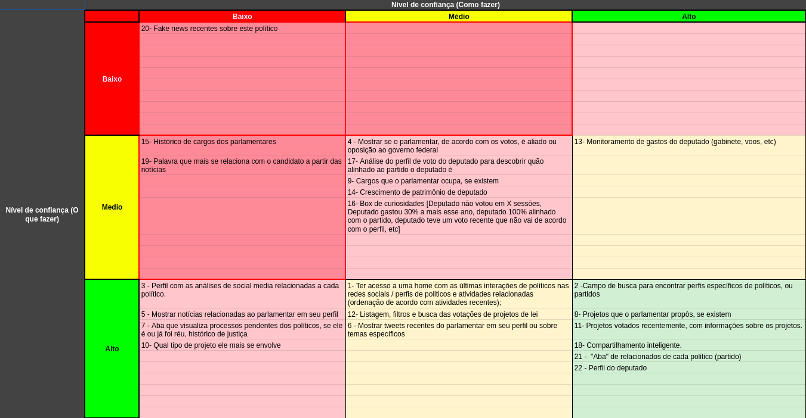

Lean Inception
Todo procedimento do lean inception foi realizado seguindo conforme é explicado no livro Lean inception: como alinhar pessoas e construir o produto certo e feito em grupo com os todos os seus integrantes.
Ideia
ODS 16 - Paz, Justiça e Instituições Eficazes 16.6 Desenvolver instituições eficazes, responsáveis e transparentes em todos os níveis.
Visão de Produto
- Nome: “Ainda não foi decidido”
- Problema: A dificuldade de se encontrar dados centralizados de políticos, como gastos, votações, notícias e seu comportamento em redes sociais.
- Proposta de solução: A solução se baseia num portal onde pode se ver dados dos políticos brasileiros disponíveis em bases de dados abertos, como dados.gov, twitter, etc.
- Diferencial: fornecer um perfil centralizado que mostre informações sobre o comportamento dos políticos em relação a gastos, votos, notícias, partidos, entre outros.
O produto é - Não é - Faz - Não faz
| O produto é: | Não é: |
|---|---|
| - Uma webpage (funciona tanto de forma móvel, como de forma desktop - aplicação gratuita, com doações disponíveis ou monetizado com banners / ads (caso precise) - Um centralizador de informações importantes de todos os políticos - De fácil uso e aprendizagem com itens intuitivos e de UI limpa |
- Um aplicativo Mobile -Complicado de usar |
| O produto faz: | Não faz: |
|---|---|
| - Gera uma base de dados de cada candidato, como suas redes sociais, gastos, projetos, etc - Trabalha os dados para gerar insights: análise de twittes, de seguidores, de gastos, de projetos, etc - Exibe esses dados de forma clara para a população |
- Análises não técnicas - Autenticação de usuários |
Esclarecendo o objetivo
- Analisar o comportamento público e político de parlamentares.
- Unificar e exibir de forma amigável as informações dos parlamentares.
- Gerar novos conhecimentos a partir dos dados abertos
Personas
| Persona 01 |
|---|
| Apelido: Saulo Caneta Perfil: Jovem, 25 anos Comportamento: Uma pessoa que se diz de centro, e tem interesse por dados. Necessidades: Ver dados sobre como os candidatos se comportam para saber em quem votar e quem não votar. |
| Persona 02 |
|---|
| Apelido: Teodoro Cima Perfil: jovem, 18 anos Comportamento: É um militante e interessado em informações sobre seus candidatos e candidatos que não o agradam Necessidades: Saber o que seus candidatos e outros estão falando. |
| Persona 03 |
|---|
| Apelido: Amadeus Perfil: 25 anos, solteiro Comportamento: curioso, engajado, passa horas em redes sociais, participa de discussões no facebook Necessidade: debater sobre política, conhecer os governantes e saber sobre seus projetos e posicionamentos, ganhar argumentos |
| Persona 04 |
|---|
| Apelido: Juliana Perfil: 40 anos, solteira, trabalha em ONG, formada. Comportamento: Comprometida, curiosa, faz muita hora extra, não entende muito de vocabulário político. Necessidades: Acompanhar projetos de lei em alta no momento, Acompanhar projetos de lei sobre um determinado assunto (votos), Acompanhar se o parlamentar que ela votou está alinhado com o que ela espera, ver quais deputados apoiam ou não um projeto de meu interesse, saber se os deputados estão fazendo bom uso do dinheiro público. |
| Persona 05 |
|---|
| Apelido: Bozzo Perfil: adulto, 60 anos, político Comportamento: um idoso muito arcaico e sem sabedoria, porém muito ambicioso em pregar e propagar uma realidade que só ele acredita para o mundo. Necessidades: saber como está seu status atual perante a sociedade, para buscar meios de associar sua imagem a causas que podem ofuscar seus erros e melhorar sua reputação durante seu processo eleitoral. |
| Persona 06 |
|---|
| Apelido: Konan o pacifico. Perfil: 22 anos, solteiro, amigável, professor de filosofia. Comportamento: competitivo, inteligente, comprometido, assíduo em páginas relacionadas a política, escritor de páginas políticas. Necessidades: Procurar conteúdos para falar nas páginas em que participa, embasar bem seus argumentos em dados reais. |
Jornadas
- Jornada(s) Prioritária(s): 07, 03, 06
| Passos da jornada 01 ( Amadeus ) | Funcionalidade |
|---|---|
| Acorda e tomá café | . |
| Checa as redes sociais durante seu café e vê uma discussão sobre deputado joãozinho | . |
| Verifica os processos do deputado | 2 -Campo de busca para encontrar perfis específicos de políticos, ou partidos 7 - Aba que visualiza processos pendentes dos políticos, se ele é ou já foi réu, histórico de justiça |
| Verifica os projetos que está envolvido | 8- Projetos que o parlamentar propôs, se existem 10- Qual tipo de projeto ele mais se envolve |
| Entra na discussão do facebook | . |
| Alguém contra argumenta | . |
| Procura mais informações para tentar ganhar a discussão | 14- Crescimento de patrimônio de deputado 20- Fake news recentes sobre este político 13- Monitoramento de gastos do deputado (gabinete, voos, etc) |
| Passos da jornada 02 (Eren) | Funcionalidade |
|---|---|
| Acorda, toma café, toma banhao e vai ao trabalho. | |
| Chega no trabalho mais cedo e aproveita para socializar com os colegas | |
| Na socialização, Eren ouve o nome de um deputado na roda dos amigos e aproveita para pesquisá-lo | |
| Abre o site e pesquisa o nome do deputado | 12- Listagem, filtros e busca das votações de projetos de lei |
| Vê as principais notícias desse político | 5 - Mostrar notícias relacionadas ao parlamentar em seu perfil |
| Encontra a notícia e entra no link que leva a página da noticia | 5 - Mostrar notícias relacionadas ao parlamentar em seu perfil |
| Conta aos colegas sobres os principais assuntos desse político e mostra o perfil dele. | 18- Compartilhamento inteligente. |
| Os amigos, curiosos, abrem a vida financeira do parlamentar | 13- Monitoramento de gastos do deputado (gabinete, voos, etc) (Campo financeiro do político. Local destinado a mostrar os dados financeiros como gasto, consumo, gráficos , etc.) |
| Os amigos verificam que o político obteve um aumento de gastos de 132% em relação ao ano passado e concluem que deve ser algum esquema ilícito. | 13- Monitoramento de gastos do deputado (gabinete, voos, etc)(No campo financeiro, além de mostrar os dados, há um pequeno processamento e trabalho nesses dados (como um comparativo em porcentagem)) |
| Trabalho e fim de expediente | |
| Chegando em casa, o usuário conta a esposa as notícias de hoje | |
| Esposa engaja no assunto e o usuário mostra os fatos discutidos e os políticos relacionados ao candidato | 21 - "Aba" de relacionados de cada politico (partido, noticas , etc..) |
| Os usuários encerram o dia |
| Passos da jornada 03 (Armim) | Funcionalidade |
|---|---|
| Acorda cedo, vida de universtário, toma café e vai à faculdade | |
| Engajado politicamente, Armim abre o site já com o seu candidato favorito | |
| Armim vê seus tweets recentes para saber em que seu político está se engajando recentemente. | 6 - Mostrar tweets recentes do parlamentar em seu perfil ou sobre temas específicos |
| Armim compartilha sua pesquisa com seus colegas | |
| Ao fim da aula, Armim nota que o posicionamento do tweet é contra a ideia do partido | 17- Análise do perfil de voto do deputado para descobrir quão alinhado ao partido o deputado é |
| Após comentar sobre isso com um amigo, Armim continua sua pesquisa e procura se o político em questão possui algum antecedente criminal | 7 - Aba que visualiza processos pendentes dos políticos, se ele é ou já foi réu, histórico de justiça |
| Fim do dia na unb e armim resolveu contar a seus amigos pelo wpp | |
| Para facilitar sua vida, armim compartilhou o perfil desse político em questão | 18- Compartilhamento inteligente. |
| Armim vai tomar banho e dormr, fim de dia. |
| Passos da jornada 04 (Luiz camioneiro) | Funcionalidade |
|---|---|
| Acorda depois de um dia inteiro na estrada a trabalho | |
| Abre o celular, dá bom dia nos grupos da família e dos grupos de trabalho | |
| Vê as noticías em geral, e vê seu político rival envolvido com algo sujo | |
| Resolve procurar mais podres desse político e no que ele está envolvido a mais | 2 -Campo de busca para encontrar perfis específicos de políticos, ou partidos 7 - Aba que visualiza processos pendentes dos políticos, se ele é ou já foi réu, histórico de justiça |
| Se gaba de que seu político não fez tal coisa e quer mostrar o que ele fez de bom | 5 - Mostrar notícias relacionadas ao parlamentar em seu perfil 11- Projetos votados recentemente, com informações sobre os projetos. |
| Estaciona o caminhão para poder almoçar e descansar um pouco | |
| Ficou curioso sobre quais mais parlamentares apoiam o político | 2 -Campo de busca para encontrar perfis específicos de políticos, ou partidos 3 - Perfil com as análises de social media relacionadas a cada político. 4 - Mostrar se o parlamentar, de acordo com os votos, é aliado ou oposição ao governo federal 21 - "Aba" de relacionados de cada politico (partido, noticas , etc..) |
| Abriu as notícias e viu um acontecimento interessante e quer saber o que o seu político pensa/se expressou a respeito | 1- Ter acesso a uma home com as últimas interações de políticos nas redes sociais / perfis de politicos e atividades relacionadas (ordenação de acordo com atividades recentes); 6 - Mostrar tweets recentes do parlamentar em seu perfil ou sobre temas específicos |
| Viu que um político que havia pesquisado se alinhou com sua ideologia e resolve mostrar ele para seus companheiros camioneiros | 18- Compartilhamento inteligente. |
| Parou num outro posto pra tomar um suco de laranja e dar mais uma descansada da viagem | |
| Descobre que estão falando mal do seu político em alguns de seus grupos e decide procurar por argumentos para defendê-lo | 19- Palavra que mais se relaciona com o candidato a partir das notícias 8- Projetos que o parlamentar propôs, se existem 10- Qual tipo de projeto ele mais se envolve 7 - Aba que visualiza processos pendentes dos políticos, se ele é ou já foi réu, histórico de justiça |
| Volta sua atenção agora para o trabalho pelo restante do dia, deixando de lado os aparelhos eletrônicos |
| Passos da jornada 06 ( Konnan, o Pacífico ) | Funcionalidade |
|---|---|
| Acorda | |
| Toma café da manha | |
| Antes de ir para o trabalho procura alguma novidade na nossa aplicação relacionada a algum politico do seu estado para colocar nas paginas onde participa | 2 -Campo de busca para encontrar perfis específicos de políticos, ou partidos 5- Mostrar notícias relacionadas ao parlamentar em seu perfil 11- Projetos votados recentemente, com informações sobre os projetos. 16- Box de curiosidades |
| Faz a cordenação no trabalho | |
| Da aula para suas tumas | |
| Vai pra sua casa | |
| Pede um lanche, e janta | |
| Entra em no grupo no discord dos escritores da paginas discutem propoem temas e escolhem os mais interessantes, dividem entre si os temas ganhadores e cada pessoa fica responsável por fazer um post sobre seu tema | |
| Entra na nossa aplicação busca noticias, também pesquisa e entra no perfil de um politico que aparentemente esta envolvido em um escandalo, com isso ja tem material para seus posts | 5- Mostrar notícias relacionadas ao parlamentar em seu perfil 6- Mostrar tweets recentes do parlamentar em seu perfil 7- Aba que visualiza processos pendentes dos políticos, se ele é ou já foi réu, histórico de justiça 8- Projetos que o parlamentar propôs, se existem 9- Cargos que o parlamentar ocupa, se existem 10- Qual tipo de projeto ele mais se envolve 13- Monitoramento de gastos do deputado (gabinete, voos, etc) 14- Crescimento de patrimônio de deputado 15- Histórico de cargos dos parlamentares 16- Box de curiosidades 18- Compartilhamento inteligente. 20- Fake news recentes sobre este político |
| discute nos comentarios dos posts | |
| assiste alguma serie mainstream do momento | |
| Se prepara para dormir | |
| le um pouco do seu livro de cabeceira ate pegar no sono |
| Passos da jornada 07 ( Juliana ) | Funcionalidade |
|---|---|
| Acorda ás 07 | |
| Prepara seu café, toma banho e inicia seu expediente em sua ONG de proteção aos animais | |
| Recebe de uma colega a notícia sobre um projeto de lei votado recentemente que aumenta a pena para maus tratos animais | |
| Abre o site com o objetivo de ver quais deputados votaram naquele projeto | |
| Se distrai pois vê que um politico que ela não gosta muito está na homepage do site, e vai ver o motivo | 1- Ter acesso a uma home com as últimas interações de políticos nas redes sociais / perfis de politicos e atividades relacionadas (ordenação de acordo com atividades recentes); |
| Vê que o deputado em questão tem um tweet recente falando sobre um PL que vai ser votado em breve. | 6 - Mostrar tweets recentes do parlamentar em seu perfil ou sobre temas específicos |
| Após descobrir o que o deputado fez, ela volta a sua missão original e procura pelo Projeto citado pela colega | 12- Listagem, filtros e busca das votações de projetos de lei |
| Percebe que o deputado que ela confiou votou "NÃO" pra proposta em questão. | 12- Listagem, filtros e busca das votações de projetos de lei |
| Fica indignada pois elegeu um deputado que achava que estava de acordo com seus pensamentos | |
| Decide investigar e abre o perfil do deputado em questão | 22 - Perfil do deputado |
| Vê que o deputado tem 100% de alinhamento ao partido, e que o partido em questão votou "Não" para essa proposta | 12- Listagem, filtros e busca das votações de projetos de lei 16- Box de curiosidades [Deputado não votou em X sessões, Deputado gastou 30% a mais esse ano, deputado 100% alinhado com o partido, deputado teve um voto recente que não vai de acordo com o perfil, etc] 17- Análise do perfil de voto do deputado para descobrir quão alinhado ao partido o deputado é |
| Compartilha a informação recem-descoberta com a amiga, clicando no botão | 18- Compartilhamento inteligente. |
| Decide que na próxima eleição vai procurar um deputado que não tenha rabo preso. | 2 -Campo de busca para encontrar perfis específicos de políticos, ou partidos |
Funcionalidades
| Funcionalidade |
|---|
| 1- Ter acesso a uma home com as últimas interações de políticos nas |
| 2 -Campo de busca para encontrar perfis específicos de políticos, ou |
| 3 - Perfil com as análises de social media relacionadas a cada |
| 4 - Mostrar se o parlamentar, de acordo com os votos, é aliado ou |
| 5 - Mostrar notícias relacionadas ao parlamentar em seu perfil |
| 6 - Mostrar tweets recentes do parlamentar em seu perfil ou sobre |
| 7 - Aba que visualiza processos pendentes dos políticos, se ele é ou |
| 8- Projetos que o parlamentar propôs, se existem |
| 9- Cargos que o parlamentar ocupa, se existem |
| 10- Qual tipo de projeto ele mais se envolve |
| 11- Projetos votados recentemente, com informações sobre os projetos. |
| 12- Listagem, filtros e busca das votações de projetos de lei |
| 13- Monitoramento de gastos do deputado (gabinete, voos, etc) |
| 14- Crescimento de patrimônio de deputado |
| 15- Histórico de cargos dos parlamentares |
| 16- Box de curiosidades [Deputado não votou em X sessões, Deputado gastou 30% a mais esse ano, deputado 100% alinhado com o partido, deputado teve um voto recente que não vai de acordo com o perfil, etc] |
| 17- Análise do perfil de voto do deputado para descobrir quão alinhado ao partido o deputado é |
| 18- Compartilhamento inteligente. |
| 19- Palavra que mais se relaciona com o candidato a partir das notícias |
| 20- Fake news recentes sobre este político |
| 21 - "Aba" de relacionados de cada politico (partido) |
| 22 - Perfil do deputado |
Revisão técnica, de negócio e de UX

| Funcionalidade | Nível de confiança | Esforço | Valor UX | Valor do negócio |
|---|---|---|---|---|
| 1- Ter acesso a uma home com as últimas interações de políticos nas redes sociais / perfis de politicos e atividades relacionadas (ordenação de acordo com atividades recentes); | Amarelo | EEE | ♡ ♡ ♡ | $$$ |
| 2 -Campo de busca para encontrar perfis específicos de políticos, ou partidos | Verde | E | ♡ ♡ ♡ | $ |
| 3 - Perfil com as análises de social media relacionadas a cada político. | Vermelho | EEE | ♡ ♡ ♡ | $$$ |
| 4 - Mostrar se o parlamentar, de acordo com os votos, é aliado ou oposição ao governo federal | Vermelho | EEE | ♡ ♡ | $ |
| 5 - Mostrar notícias relacionadas ao parlamentar em seu perfil | Vermelho | EE | ♡ ♡ ♡ | $$$ |
| 6 - Mostrar tweets recentes do parlamentar em seu perfil ou sobre temas específicos | Amarelo | EEE | ♡ | $$ |
| 7 - Aba que visualiza processos pendentes dos políticos, se ele é ou já foi réu, histórico de justiça | Vermelho | EEE | ♡ ♡ ♡ | $$$ |
| 8- Projetos que o parlamentar propôs, se existem | Verde | EE | ♡ ♡ ♡ | $$ |
| 9- Cargos que o parlamentar ocupa, se existem | Vermelho | EEE | ♡ | $ |
| 10- Qual tipo de projeto ele mais se envolve | Vermelho | EEE | ♡ ♡ | $$ |
| 11- Projetos votados recentemente, com informações sobre os projetos em seu perfil. | Verde | EE | ♡ ♡ | $$$ |
| 12- Listagem, filtros e busca das votações de projetos de lei | Amarelo | EE | ♡ ♡ ♡ | $ |
| 13- Monitoramento de gastos do deputado (gabinete, voos, etc) | Amarelo | EE | ♡ ♡ ♡ | $$ |
| 14- Crescimento de patrimônio de deputado | Vermelho | E | ♡ ♡ ♡ | $$$ |
| 15- Histórico de cargos dos parlamentares | Vermelho | EEE | ♡ | $ |
| 16- Box de curiosidades [Deputado não vota há X sessões, Deputado gastou 30% a mais esse ano, deputado 100% alinhado com o partido, deputado teve um voto recente que não vai de acordo com o perfil, etc] | Vermelho | EEE | ♡ ♡ ♡ | $$ |
| 17- Análise do perfil de voto do deputado para descobrir quão alinhado ao partido o deputado é | Vermelho | EE | ♡ ♡ | $$ |
| 18- Compartilhamento inteligente. | Verde | E | ♡ ♡ ♡ | $$$ |
| 19- Palavra que mais se relaciona com o candidato a partir das notícias | Vermelho | EEE | ♡ | $ |
| 20- Fake news recentes sobre este político | Vermelho | EEE | ♡ ♡ | $ |
| 21 - "Aba" de relacionados de cada politico (partido) | Verde | EE | ♡ ♡ | $$$ |
| 22 - Perfil do deputado | Verde | E | ♡ ♡ ♡ | $$$ |
Sequenciador
-
Regra 1: Uma onda pode conter, no máximo, três cartões.
-
Regra 2: Uma onda não pode conter mais de um cartão vermelho.
-
Regra 3: Uma onda não pode conter três cartões somente amarelos ou vermelhos.
-
Regra 4: A soma de esforço dos cartões não pode ultrapassar 6 “E”.
-
Regra 5: A soma de valor dos cartões não pode ser menos de quatro “$” e quatro corações.
-
Regra 6: Se um cartão depende de outro, esse outro deve estar em alguma onda anterior.
MVP
| Onda 01 | ||||
|---|---|---|---|---|
| Funcionalidade | Cor | Esforço | UX | Valor |
| 1- Ter acesso a uma home com as últimas interações de políticos nas redes sociais / perfis de politicos e atividades relacionadas (ordenação de acordo com atividades recentes); | Amarelo | EEE | ♡ ♡ ♡ | $$$ |
| 22 - Perfil do deputado | Verde | E | ♡ ♡ ♡ | $$$ |
| 2 -Campo de busca para encontrar perfis específicos de políticos, ou partidos | Verde | E | ♡ ♡ ♡ | $ |
| RESULTADO |
| Onda 02 | ||||
|---|---|---|---|---|
| Funcionalidade | Cor | Esforço | UX | Valor |
| 18- Compartilhamento inteligente. | Verde | E | ♡ ♡ ♡ | $$$ |
| 11- Projetos votados recentemente, com informações sobre os projetos em seu perfil. | Verde | EE | ♡ ♡ | $$$ |
| 5 - Mostrar notícias relacionadas ao parlamentar em seu perfil | Vermelho | EE | ♡ ♡ ♡ | $$$ |
| RESULTADO |
Incremento 1
| Onda 03 | ||||
|---|---|---|---|---|
| Funcionalidade | Cor | Esforço | UX | Valor |
| 17- Análise do perfil de voto do deputado para descobrir quão alinhado ao partido o deputado é | Vermelho | EE | ♡ ♡ | $$ |
| 12- Listagem, filtros e busca das votações de projetos de lei | Amarelo | EE | ♡ ♡ ♡ | $ |
| 13- Monitoramento de gastos do deputado (gabinete, voos, etc) | Amarelo | EE | ♡ ♡ ♡ | $$ |
| RESULTADO |
Incremento 2
| Onda 04 | ||||
|---|---|---|---|---|
| Funcionalidade | Cor | Esforço | UX | Valor |
| 16- Box de curiosidades [Deputado não vota há X sessões, Deputado gastou 30% a mais esse ano, deputado 100% alinhado com o partido, deputado teve um voto recente que não vai de acordo com o perfil, etc] | Vermelho | EEE | ♡ ♡ ♡ | $$ |
| 8- Projetos que o parlamentar propôs, se existem | Verde | EE | ♡ ♡ ♡ | $$ |
| RESULTADO |
| Onda 05 | ||||
|---|---|---|---|---|
| Funcionalidade | Cor | Esforço | UX | Valor |
| 14- Crescimento de patrimônio de deputado | Vermelho | E | ♡ ♡ ♡ | $$$ |
| RESULTADO |
Incremento 3
| Onda 06 | ||||
|---|---|---|---|---|
| Funcionalidade | Cor | Esforço | UX | Valor |
| 6 - Mostrar tweets recentes do parlamentar em seu perfil ou sobre temas específicos | Amarelo | EEE | ♡ | $$ |
| 10- Qual tipo de projeto ele mais se envolve | Vermelho | EEE | ♡ ♡ | $$ |
| RESULTADO |
Incremento 4
| Onda 07 | ||||
|---|---|---|---|---|
| Funcionalidade | Cor | Esforço | UX | Valor |
| 7 - Aba que visualiza processos pendentes dos políticos, se ele é ou já foi réu, histórico de justiça | Vermelho | EEE | ♡ ♡ ♡ | $$$ |
| RESULTADO |
Incremento 5
| Onda 08 | ||||
|---|---|---|---|---|
| Funcionalidade | Cor | Esforço | UX | Valor |
| 9- Cargos que o parlamentar ocupa, se existem | Vermelho | EEE | ♡ | $ |
| RESULTADO |
Canvas
| 2. Personas Segmentadas | 1. Proposta do MVP | 5. Resultado Esperado | |
|---|---|---|---|
| 1. Juliana Perfil: 40 anos, solteira, trabalha em ONG, formada. Comportamento: Comprometida, curiosa, faz muita hora extra, não entende muito de vocabulário político. Necessidades: Acompanhar projetos de lei em alta no momento, Acompanhar projetos de lei sobre um determinado assunto (votos), Acompanhar se o parlamentar que ela votou está alinhado com o que ela espera, ver quais deputados apoiam ou não um projeto de meu interesse, saber se os deputados estão fazendo bom uso do dinheiro público. 2. Armin Perfil: jovem, 22 anos, solteiro Comportamento: é uma pessoa amigável, adora sair e conversar com os amigos. Cursa direito na universidade federal e é uma pessoa extremamente inteligente e visionária. Necessidades: embasar seus argumentos políticos com dados, notícias e fóruns. 3. Konan o pacifico. Perfil: 22 anos, solteiro, amigável, professor de filosofia. Comportamento: competitivo, inteligente, comprometido, assíduo em páginas relacionadas a política, escritor de páginas políticas . Necessidades: Procurar conteúdos para falar nas páginas em que participa, embasar bem seus argumentos em dados reais |
- para todos os cidadãos interessados em política - que possuem dificuldades para acompanhar seus candidatos - o "NOME" - é um site gratuito - que concentra informações sobre votos, novidades de parlamentares e gastos de forma limpa, clara e centralizada - diferentemente de sites de transparência do governo, brasil.io, parlametria e ranking dos deputados - o nosso site centraliza e faz analise sobre os dados para expor ao cidadão eleitor todas as informações relevantes de um parlamentar escolhido. |
Facilitar e tornar mais acessível o acesso aos dados mais relevantes referentes aos deputados e ajudar o usuário a identificar se o parlamentar é alinhado ás suas ideias, ser fácil de usar e acessível a todos. |
| 3. Jornadas | 4. Funcionalidades | 6. Métricas para validar as hipóteses do negócio | |
|---|---|---|---|
| JulianaAcorda ás 07 Prepara seu café, toma banho e inicia seu expediente em sua ONG de proteção aos animais Recebe de uma colega a notícia sobre um projeto de lei votado recentemente que aumenta a pena para maus tratos animais Abre o site com o objetivo de ver quais deputados votaram naquele projeto Se distrai pois vê que um politico que ela não gosta muito está na homepage do site, e vai ver o motivo Vê que o deputado em questão tem um tweet recente falando sobre um PL que vai ser votado em breve. Após descobrir o que o deputado fez, ela volta a sua missão original e procura pelo Projeto citado pela colega Percebe que o deputado que ela confiou votou "NÃO" pra proposta em questão. Fica indignada pois elegeu um deputado que achava que estava de acordo com seus pensamentos Decide investigar e abre o perfil do deputado em questão Vê que o deputado tem 100% de alinhamento ao partido, e que o partido em questão votou "Não" para essa proposta Compartilha a informação recem-descoberta com a amiga, clicando no botão Decide que na próxima eleição vai procurar um deputado que não tenha rabo preso. |
Funcionalidades envolvidas na jornada 1- Ter acesso a uma home com as últimas interações de políticos nas redes sociais / perfis de politicos e atividades relacionadas (ordenação de acordo com atividades recentes); 6 - Mostrar tweets recentes do parlamentar em seu perfil ou sobre temas específicos 12- Listagem, filtros e busca das votações de projetos de lei 22 - Perfil do deputado 16- Box de curiosidades [Deputado não votou em X sessões, Deputado gastou 30% a mais esse ano, deputado 100% alinhado com o partido, deputado teve um voto recente que não vai de acordo com o perfil, etc] 17- Análise do perfil de voto do deputado para descobrir quão alinhado ao partido o deputado é 18- Compartilhamento inteligente. 2 -Campo de busca para encontrar perfis específicos de políticos, ou partidos |
1- Ter acesso a uma home com as últimas interações de políticos nas redes sociais / perfis de politicos e atividades relacionadas (ordenação de acordo com atividades recentes); 22 - Perfil do deputado 2 -Campo de busca para encontrar perfis específicos de políticos, ou partidos 18- Compartilhamento inteligente. 11- Projetos votados recentemente, com informações sobre os projetos em seu perfil. 5 - Mostrar notícias relacionadas ao parlamentar em seu perfil |
Números de acessos, informações sobre compartilhamento e pesquisa no site para os usuários validarem a aplicação. |
| ArmimAcorda cedo, vida de universtário, toma café e vai à faculdade Engajado politicamente, Armim abre o site já com o seu candidato favorito "Armim vê seus tweets recentes para saber em que seu político está se engajando recentemente." Armim compartilha sua pesquisa com seus colegas "Ao fim da aula, Armim nota que o posicionamento do tweet é contra a ideia do partido" "Após comentar sobre isso com um amigo, Armim continua sua pesquisa e procura se o político em questão possui algum antecedente criminal" Fim do dia na unb e armim resolveu contar a seus amigos pelo wpp "Para facilitar sua vida, armim compartilhou o perfil desse político em questão" Armim vai tomar banho e dormr, fim de dia. |
Funcionalidades envolvidas na jornada6 - Mostrar tweets recentes do parlamentar em seu perfil ou sobre temas específicos 17- Análise do perfil de voto do deputado para descobrir quão alinhado ao partido o deputado é 7 - Aba que visualiza processos pendentes dos políticos, se ele é ou já foi réu, histórico de justiça 18- Compartilhamento inteligente. |
7. Custos e Cronograma | |
| Konnan, o Pacífico. Acorda Toma café da manha Antes de ir para o trabalho procura alguma novidade na nossa aplicação relacionada a algum politico do seu estado para colocar nas paginas onde participa Faz a cordenação no trabalho Da aula para suas tumas Vai pra sua casa Pede um lanche, e janta Entra em no grupo no discord dos escritores da paginas discutem propoem temas e escolhem os mais interessantes, dividem entre si os temas ganhadores e cada pessoa fica responsável por fazer um post sobre seu tema Entra na nossa aplicação busca noticias, também pesquisa e entra no perfil de um politico que aparentemente esta envolvido em um escandalo, com isso ja tem material para seus posts discute nos comentarios dos posts assiste alguma serie mainstream do momento Se prepara para dormir le um pouco do seu livro de cabeceira ate pegar no sono |
Funcionalidades envolvidas na jornada 2 -Campo de busca para encontrar perfis específicos de políticos, ou partidos 5- Mostrar notícias relacionadas ao parlamentar em seu perfil 11- Projetos votados recentemente, com informações sobre os projetos. 16- Box de curiosidades" "5- Mostrar notícias relacionadas ao parlamentar em seu perfil 6- Mostrar tweets recentes do parlamentar em seu perfil 7- Aba que visualiza processos pendentes dos políticos, se ele é ou já foi réu, histórico de justiça 8- Projetos que o parlamentar propôs, se existem 9- Cargos que o parlamentar ocupa, se existem 10- Qual tipo de projeto ele mais se envolve 13- Monitoramento de gastos do deputado (gabinete, voos, etc) 14- Crescimento de patrimônio de deputado 15- Histórico de cargos dos parlamentares 16- Box de curiosidades 18- Compartilhamento inteligente. 20- Fake news recentes sobre este político |
Custo não se aplica. Cronograma de acordo com a máteria. |